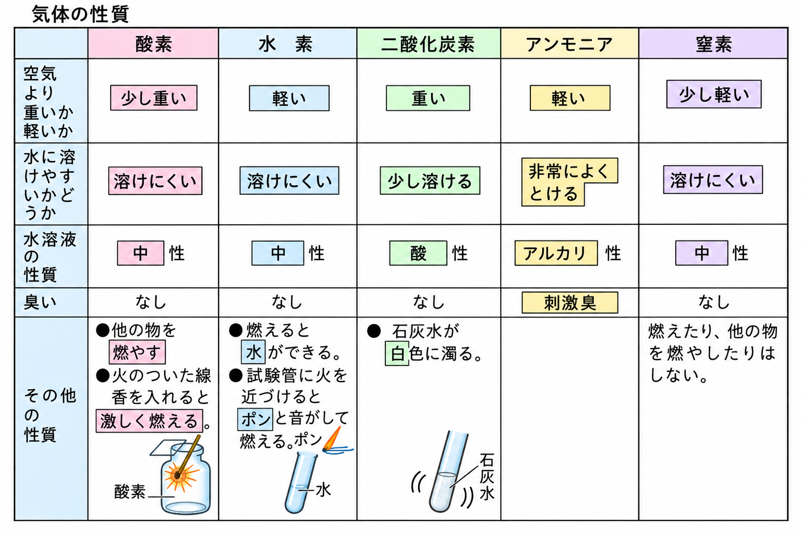
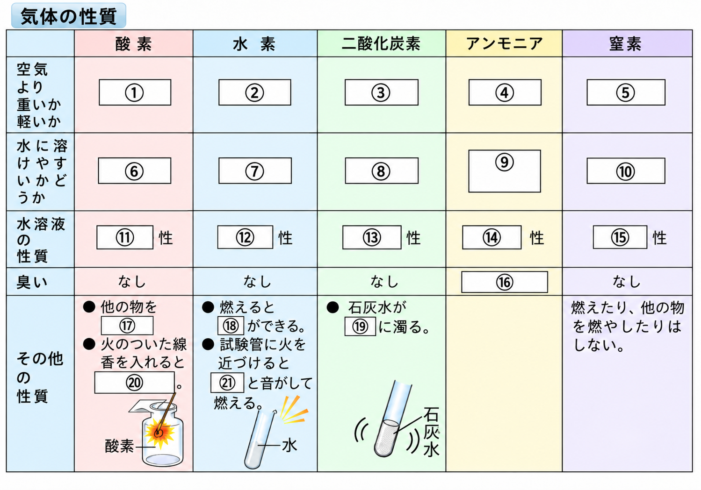
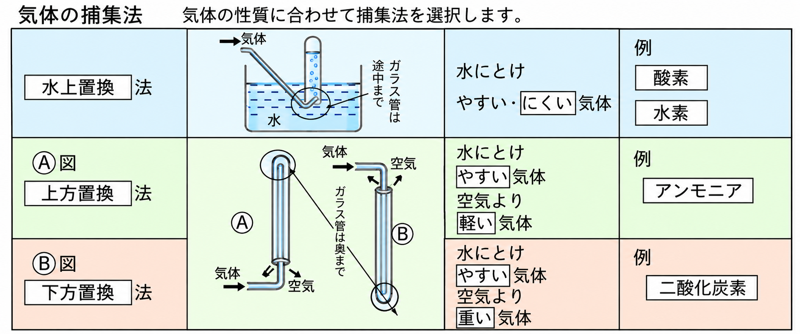
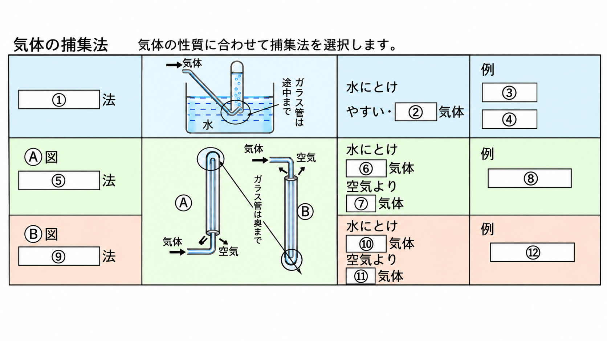
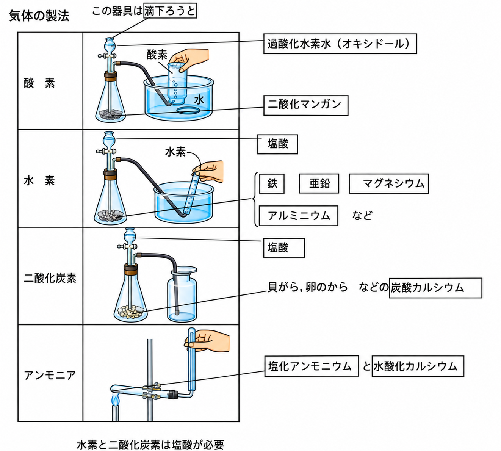
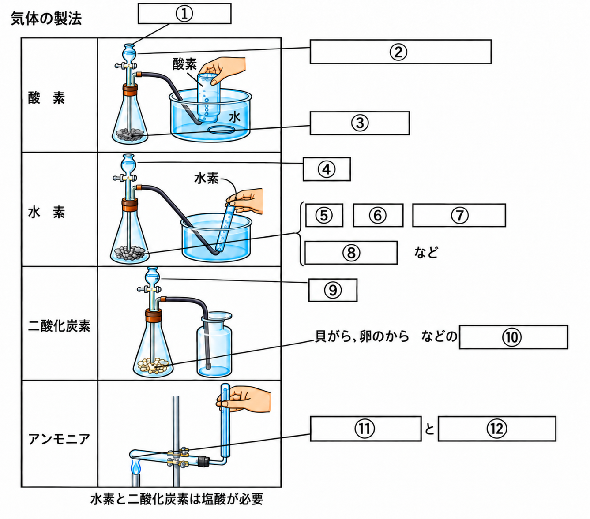
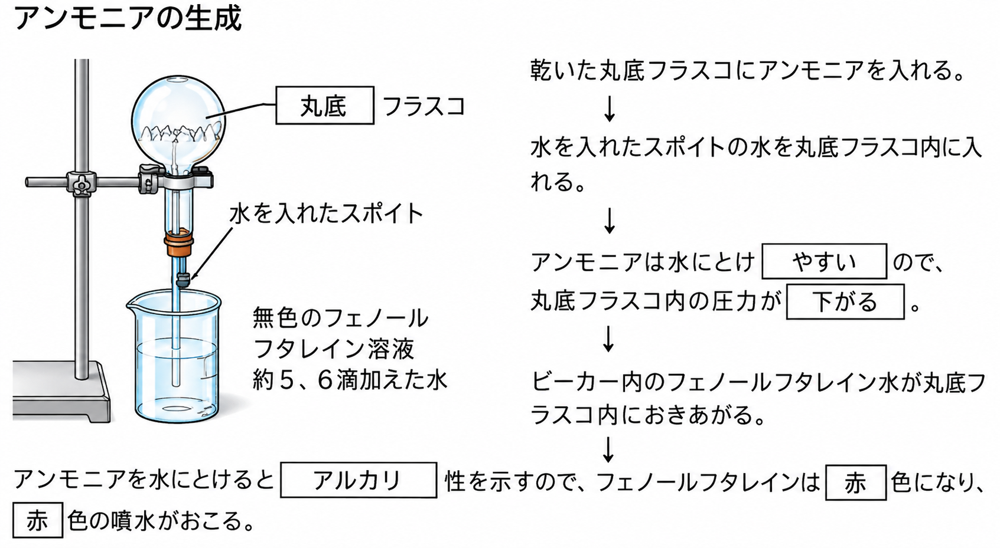
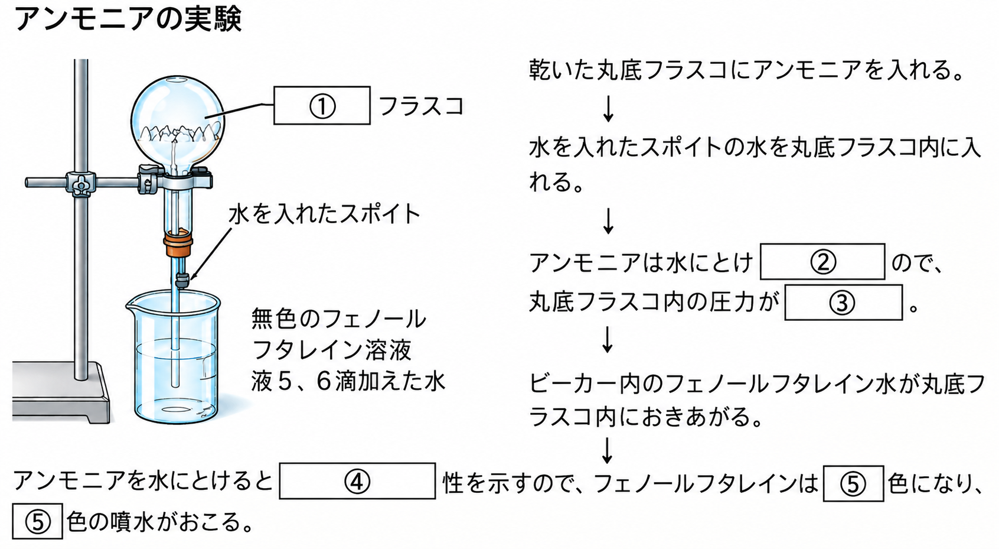
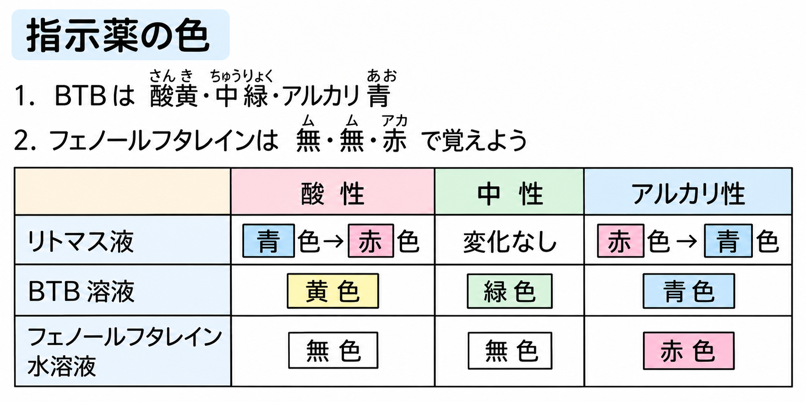
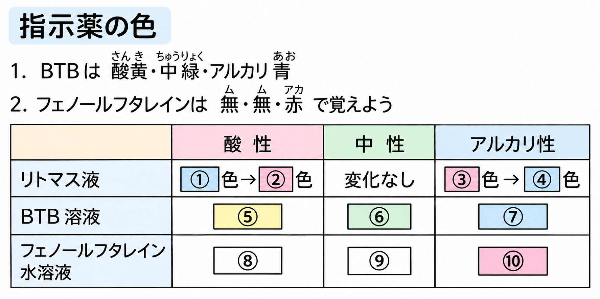

空気に最も多くふくまれている気体は窒素で約80%、次に多いのは酸素で約20%です。

| 酸素 | 水素 | 二酸化炭素 | アンモニア | 窒素 | |
|---|---|---|---|---|---|
| 空気より重いか軽いか | 少し重い | 軽い | 重い | 軽い | 少し軽い |
| 水に溶けやすいか | 溶けにくい | 溶けにくい | 少し溶ける | 非常によく溶ける | 溶けにくい |
| 水溶液の性質 | 中性 | 中性 | 酸性 | アルカリ性 | 中性 |
| におい | なし | なし | なし | 刺激臭 | なし |
酸素には、他の物を燃やす性質があります。火のついた線香を酸素の中に入れると激しく燃えます。水素は空気中で燃えると水ができます。試験管に集めた水素に火を近づけると、ポンと音がして燃えます。二酸化炭素を石灰水に通すと、石灰水が白色ににごります。窒素は燃えたり、他の物を燃やしたりしません。
- 空気の組成:窒素 約80%、酸素 約20%
- 酸素:他の物を燃やす(線香が激しく燃える)
- 水素:燃えると水ができる(火を近づけるとポンと音)
- 二酸化炭素:石灰水を白くにごらせる。水溶液(炭酸水)は酸性
- アンモニア:刺激臭があり、水に非常に溶けやすい。水溶液(アンモニア水)はアルカリ性
- 窒素:燃えない、他の物も燃やさない

空気より重いか軽いか:酸素は①少し重い、水素は②軽い、二酸化炭素は③重い、アンモニアは④軽い、窒素は⑤少し軽い。
水に溶けやすいか:酸素は⑥溶けにくい、水素は⑦溶けにくい、二酸化炭素は⑧少し溶ける、アンモニアは⑨非常によく溶ける、窒素は⑩溶けにくい。
水溶液の性質:酸素は⑪中性、水素は⑫中性、二酸化炭素は⑬酸性、アンモニアは⑭アルカリ性、窒素は⑮中性。
におい:アンモニアだけ⑯刺激臭がある。
その他の性質:酸素は他の物を⑰燃やす性質があり、火のついた線香を入れると⑳激しく燃える。水素は燃えると⑱水ができ、試験管に火を近づけると21ポンと音がして燃える。二酸化炭素は石灰水が⑲白色に濁る。
🏆 ベストタイム
気体の集め方(捕集法)は、その気体の性質に合わせて選びます。

水上置換法……水にとけにくい気体を集める方法。試験管を水で満たしておき、出てきた気体を直接集めます。空気が混ざりにくく、発生した量も見てわかるので、水にとけにくい気体はこの方法が最適です。【例】酸素、水素
上方置換法……水にとけやすく、空気より軽い気体を集める方法。容器の上の方に気体がたまっていくので、口を下にしたびんの上から気体を導きます。【例】アンモニア
下方置換法……水にとけやすく、空気より重い気体を集める方法。容器の下の方に気体がたまっていくので、口を上にしたびんの下から気体を導きます。【例】二酸化炭素
- 水上置換法……水にとけにくい気体(例:酸素、水素)
- 上方置換法……水にとけやすく空気より軽い気体(例:アンモニア)
- 下方置換法……水にとけやすく空気より重い気体(例:二酸化炭素)

①水上置換法は、水にとけ②にくい気体を集める方法である。例:③酸素、④水素。
Ⓐ図の⑤上方置換法は、水にとけ⑥やすい気体で、空気より⑦軽い気体を集める方法である。例:⑧アンモニア。
Ⓑ図の⑨下方置換法は、水にとけ⑩やすい気体で、空気より⑪重い気体を集める方法である。例:⑫二酸化炭素。
🏆 ベストタイム

酸素は、過酸化水素水(オキシドール)に二酸化マンガンを加えると発生します。装置の上にある器具は滴下ろうとといい、液体を少しずつ加えるための器具です。フラスコは三角フラスコを使います。
水素は、塩酸に鉄・亜鉛・マグネシウム・アルミニウムなどの金属を加えると発生します。
二酸化炭素は、塩酸に貝がらや卵の殻などの炭酸カルシウム(石灰石)を加えると発生します。発生した気体を導く先のびんを集気ビンといいます。
アンモニアは、塩化アンモニウムと水酸化カルシウムの粉末を混ぜて加熱すると発生します。水素と二酸化炭素の発生には塩酸が必要です。
- 酸素:過酸化水素水(オキシドール)+二酸化マンガン
- 水素:塩酸+鉄・亜鉛・マグネシウム・アルミニウムなどの金属
- 二酸化炭素:塩酸+炭酸カルシウム(石灰石、貝がら、卵の殻など)
- アンモニア:塩化アンモニウム+水酸化カルシウムの粉末を混ぜて加熱
- 粉末を加熱するときは、試験管の口を下げる(液体が加熱部分に流れて試験管が割れるのを防ぐため)

①滴下ろうとという器具を使う。酸素は②過酸化水素水(オキシドール)に③二酸化マンガンを加えて発生させる。水素は④塩酸に⑤鉄・⑥亜鉛・⑦マグネシウム・⑧アルミニウムなどの金属を加えて発生させる。二酸化炭素は⑨塩酸に貝がらや卵の殻などの⑩炭酸カルシウムを加えて発生させる。アンモニアは⑪塩化アンモニウムと⑫水酸化カルシウムの粉末を混ぜて加熱して発生させる。
🏆 ベストタイム
アンモニアの性質を調べる実験に、「噴水実験」があります。手順は次の通りです。

- 乾いた丸底フラスコにアンモニアを満たす。
- フェノールフタレイン溶液を数滴加えた水を入れたビーカーに、フラスコにつながるガラス管(スポイト)を差し込む。
- スポイトの水をフラスコの中に入れる。
- アンモニアは水に非常によく溶けるので、フラスコ内の気体が水にとけてしまい、フラスコ内の圧力が下がる。
- ビーカー内の(フェノールフタレインを加えた)水が、フラスコの中に勢いよく吸い上げられ、噴水のようになる。
アンモニアは水にとけるとアルカリ性を示すので、吸い上げられた水の中のフェノールフタレインは赤色に変化し、赤色の噴水が起こります。
もしフェノールフタレイン溶液の代わりにBTB溶液を使うと、アンモニア水はアルカリ性なので青色の噴水になります。
- アンモニアは水に非常に溶けやすい → フラスコ内の圧力が下がる → 水が吸い上げられる(噴水)
- アンモニアが水にとけるとアルカリ性を示す → フェノールフタレインは赤色、BTB溶液は青色になる

乾いた①丸底フラスコにアンモニアを入れる。水を入れたスポイトの水を丸底フラスコ内に入れる。アンモニアは水にとけ②やすいので、丸底フラスコ内の圧力が③下がる。ビーカー内のフェノールフタレイン水が丸底フラスコ内にふきあがる。
アンモニアは水にとけると④アルカリ性を示すので、フェノールフタレインは⑤赤色になり、⑤赤色の噴水がおこる。
🏆 ベストタイム
水溶液が酸性・中性・アルカリ性のどれであるかは、いくつかの指示薬の色の変化で調べることができます。

| 酸性 | 中性 | アルカリ性 | |
|---|---|---|---|
| リトマス液 | 青色→赤色 | 変化なし | 赤色→青色 |
| BTB溶液 | 黄色 | 緑色 | 青色 |
| フェノールフタレイン水溶液 | 無色 | 無色 | 赤色 |
- リトマス液:酸性で青→赤、アルカリ性で赤→青、中性は変化なし
- BTB溶液:酸性=黄色、中性=緑色、アルカリ性=青色
- フェノールフタレイン:酸性・中性=無色、アルカリ性=赤色

リトマス液は、酸性で①青色から②赤色に変化し、アルカリ性で③赤色から④青色に変化する。中性では変化しない。
BTB溶液は、酸性で⑤黄色、中性で⑥緑色、アルカリ性で⑦青色を示す。
フェノールフタレイン水溶液は、酸性で⑧無色、中性で⑨無色、アルカリ性で⑩赤色を示す。